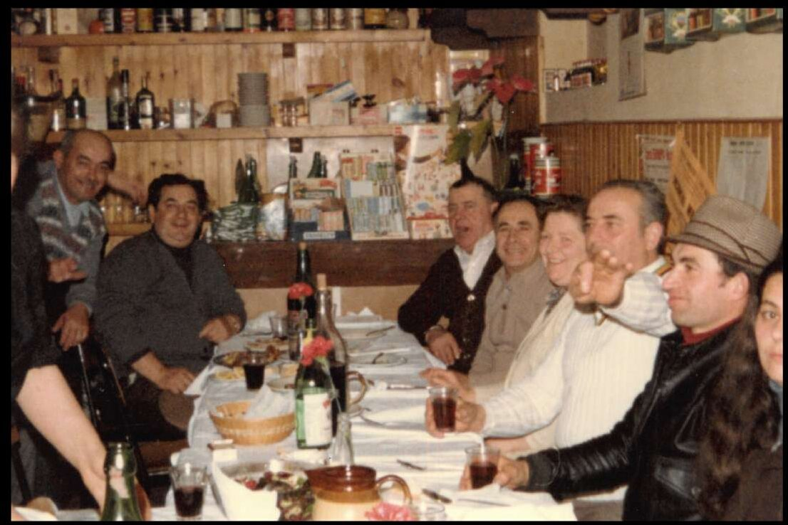

Dal 1960 · Borgo Maggiore · San Marino
Ingredienti del territorio, ricette di famiglia.
Una cucina di territorio, di memoria e di sostanza, che parte dalla tradizione romagnola e sammarinese e la valorizza con cura, qualità della materia prima e libertà creativa.
Tre generazioni, una sola cucina.


Tutto è cominciato con un bicchiere di vino. Negli anni Cinquanta, Giuseppe Ugolini, detto Gudanzon, aprì qui una piccola osteria — un posto semplice, dove la gente si fermava a bere e stare insieme.
Poi arrivò la cucina di Faustina, e oggi Maria porta avanti la stessa pasta fatta in casa, la stessa piadina, le ricette di sempre. Tre generazioni, una sola cucina.
La nostra storia →Tutto comincia in cucina.
Niente scorciatoie: la pasta la tiriamo noi ogni mattina, i dolci escono dal nostro carrello, e in tavola portiamo i prodotti del nostro territorio sammarinese.

Pasta fresca ogni mattina
Tagliatelle, strozzapreti, ravioli, gnocchi e paccheri: impastati e tirati a mano con farina sammarinese.
Prodotti di San Marino
Carni degli allevatori sammarinesi, vini del territorio, farina locale: scegliamo vicino, scegliamo bene.
Cotture lente, ricette vere
Ragù cotti piano, brace di legno, il coniglio in porchetta della tradizione. Come si faceva una volta.
Il menu della trattoria.
Pasta fatta in casa, salumi del territorio, carni degli allevatori sammarinesi e una carta dei vini tutta del Titano. A pranzo formule veloci, la sera i nostri menù fissi.
In casa nostra.
Negli anni la nostra tavola ha ospitato volti noti dello sport, dello spettacolo e della politica internazionale. Resta però il tavolo della famiglia il nostro preferito.
Sono passati di qui
- Pippo Baudo
- Valentino Rossi
- Miki Biasion
- Renata Tebaldi
- Ministri Internazionali
- … e la gente del borgo
— ma il posto migliore è ancora il vostro.



prenotazioni
Cenate con noi.
Per riservare un tavolo chiamate direttamente al 0549 875837 oppure al 335 733 6979. Per gruppi di più di otto persone, la telefonata è il modo migliore per organizzarci bene.
Dove siamo
Str. Sottomontana 37, Borgo Maggiore.
A 5 minuti dal centro storico di San Marino. Indicazioni e orari →